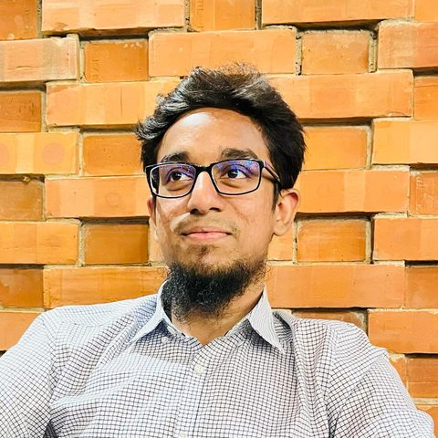
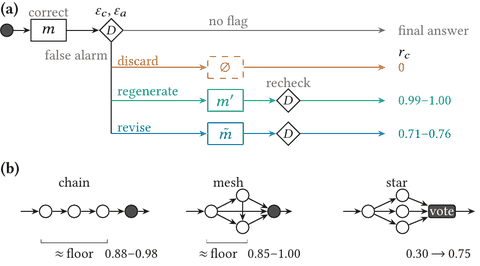
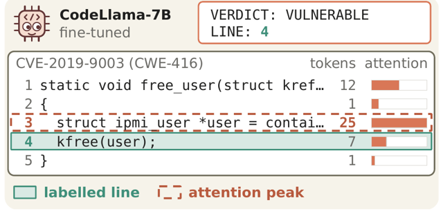
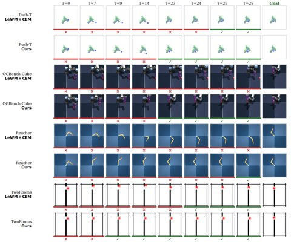

Sami Rashid
samirashid5800@gmail.com
I am a Research Assistant at the Center for Computational & Data Sciences (CCDS), Independent University, Bangladesh (IUB), where I work with Dr. AKM Mahbubur Rahman and Dr. Amin Ahsan Ali. I also work with Dr. Sajib Mistry at Curtin University on failure detection in LLM multi-agent systems.
I received my B.Sc. in Computer Science and Engineering from IUB in 2024 (CGPA 3.97/4.00, Summa Cum Laude), where I now teach programming labs as adjunct faculty.
I am actively seeking PhD positions starting in Fall 2027. Please feel free to reach out.

Research interests
My research centers on reliable and trustworthy LLM agents: how failures emerge and propagate in multi-agent systems, and how to keep agents safe and secure. A related thread is interpretability and controlled generation, from instruction following to activation steering. I am also drawn to planning with world models (JEPA), preference optimization and reasoning.
News
- Oct 2026 Three co-authored papers submitted to ACL Rolling Review: Doc-IFEval, cross-lingual emotion steering, and attention evidence in code LLMs.
- May 2026 Started working with Dr. Sajib Mistry (Curtin University) on failure detection in LLM multi-agent systems.
- Jan 2026 Received the Top Performer award (School of Engineering, Technology and Sciences) at IUB's 26th convocation.
Selected works






Earlier papers
- Sami Rashid et al. AI Agents in Healthcare: A Survey of Applications, Resources, and Challenges. IEEE SCOReD, 2025. [paper]
- Sami Rashid et al. Ensemble and Deep Learning Approaches for Automated Screening of Anxiety, Depression, and Burnout in Medical Student Populations. ASET, 2024. [paper]
- M. Islam, Sami Rashid et al. A Smartwatch-Based Workplace Stress Management mHealth Tool for Bangladeshi Healthcare Professionals. ASET, 2024. [paper]
Projects
- Vector, Graph and Hybrid RAG for Cybersecurity QA (2026). Across six open-source LLMs, plain vector retrieval was best for five; graph-only retrieval hallucinated about 15 times more. [code]
- Test-Suite Generation with Spotted Hyena Optimization (2024). A 6-case suite covering every pair, 62.5% smaller than exhaustive testing. [code]
Writing

Teaching and service
- Adjunct Faculty (lab instructor), CSE100L Computer Programming I, CSE200L Computer Programming II and CSE203L Data Structures. Independent University, Bangladesh. Spring 2025 to present.
- Teaching Assistant, Physics, Electronics Hardware, Algorithms and Theory of Computation. Independent University, Bangladesh. Summer 2022 to Summer 2024 (seven semesters).
- Secondary Reviewer, ACL Rolling Review. October 2026 cycle.